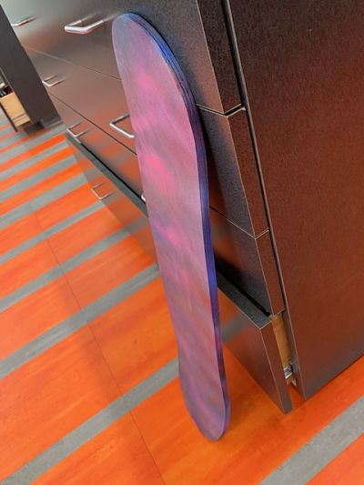

In this rotation, we had to invoke our inner Noah FS and make our own skateboards! The process of creating the skateboard contains numerous steps. First, I had to select the wooden boards that I would use. I grabbed a stack of 7 thin wooden planks which were oriented either vertically or horizontally to ensure the stability of the board. I then had to glue the boards together in less than 5 minutes because once the first bit of glue is applied, it won't take long for it to dry. With the help of my partner, I rolled a layer of glue on all of the boards and attached them together. Now that I had my seven boards attached, I had to seal them in a plastic bag, forming a vacuum, so that they would stick very cohesively together without any gaps in between the boards. I put my glued boards in the plastic bag and sealed off the opening with some strong butyl tape. In order to get all of the air out of the bag, I had to use an air pump to suck all of it out. Once the board was tightly sealed in the plastic bag, I left it overnight for the glue to dry and form a solid skateboard. The next day when I entered the building, I removed my skateboard from the bag. It had glued together very nicely and formed a distinctive skateboard shape. In terms of aesthetics, I decided to spraypaint it a variety of different colors so that it would really "pop". In the end, I really enjoyed the process of creating my own skateboard and I would do it again anytime.
 Image 1: The top of the skateboard. Image 2: The bottom of the skateboard. Image 3: the finished skateboard. Back to index